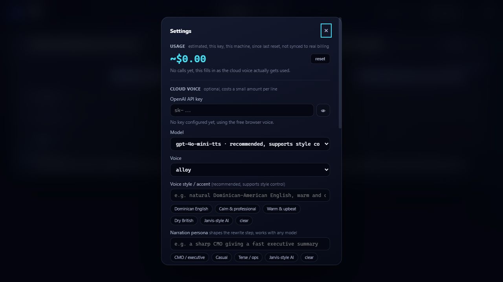

See it, hear it

Messages stays readable at a glance; Activity keeps tool calls and results one click away.

Voice, persona, and accent, all configurable, with a live cost estimate as you adjust.
See and hear your coding agents work, live. One local dashboard for Claude Code and Codex, on your own machine.
Messages stays readable at a glance; Activity keeps tool calls and results one click away.

Voice, persona, and accent, all configurable, with a live cost estimate as you adjust.
Text, thinking, tool calls, and results, streaming per session, with a small animated mascot that shows idle / thinking / speaking at a glance.
Not locked to one folder or provider: follow selected Claude Code and Codex projects, see where each lane came from, drag to reorder, and rename lanes.
Free by default (your OS voice) or a real cloud voice with a persona and accent you write yourself, not a preset dropdown.
Raw internal reasoning gets condensed into one short natural line before it's spoken, not read verbatim, word for word.
A running dollar total for the cloud voice, right in Settings. Know what you're spending before you're surprised by it.
Accent color, feed text size, a compact layout, hide the mascot, reduce motion — all in Settings, apply instantly, no reload.
Every release includes SHA-256 checksums, a CycloneDX SBOM, and GitHub/Sigstore-signed build provenance.
The rewrite step works on any dense internal reasoning, not just code. Two examples:
This isn't the first tool that gives Claude Code a voice, worth being upfront about that.
| Tool | Surface | Rewrites raw output | Persona / accent |
|---|---|---|---|
| AgentVibes | CLI hooks, audio only | No | Preset voices only |
| agent-tts | CLI, audio only | No | Provider voice only |
| Claude Code Narrator | CLI, local audio only | No | No |
| Fama | Desktop app + visual dashboard | Yes | Free-text, your words |